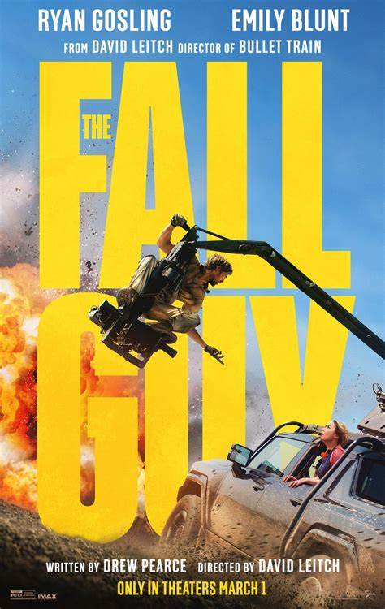
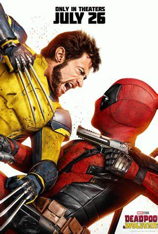
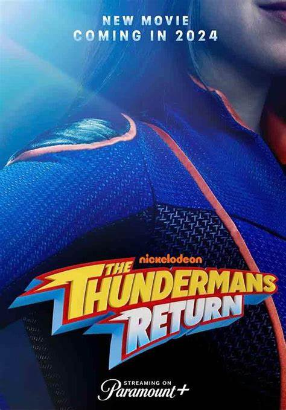

O Dublê
O Dublê é um filme de ação e comédia dirigido por David Leitch
(Trem-Bala, Deadpool 2) e baseado na série Duro na Queda, sucesso
dos anos 80. A história acompanha Colt Seavers (Ryan Gosling), um
dublê de Hollywood que precisou abandonar a vida de acrobacias
perigosas após sofrer um acidente que quase acabou com a vida e a
carreira dele

Deadpool & Wolverine
Deadpool e Wolverine (2024)" é o típico filme feito para agradar
fã, o que pode ser menos impactante pra quem tem pouco apreço por
aqueles personagens. E, infelizmente, foi o meu caso. Gostei da
trilha musical (que, propositalmente, tira sarro do que se espera
ouvir num filme de super herói), algumas cenas de ação e das
tiradas que o Deadpool fazia

The Thundermans Return
The Thundermans are back! Nickelodeon UK & Ireland will premiere
The Thundermans Return, a brand new movie based on Nickelodeon‘s
hit live-action superhero comedy series, The Thundermans, on
Thursday 7th March 2024 at 6:00pm! The movie will also be
available to stream on Paramount+, the streaming home of
Nickelodeon.